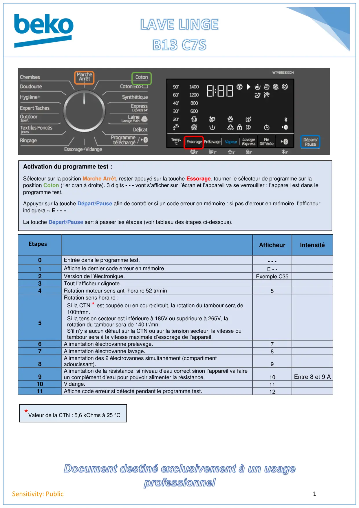
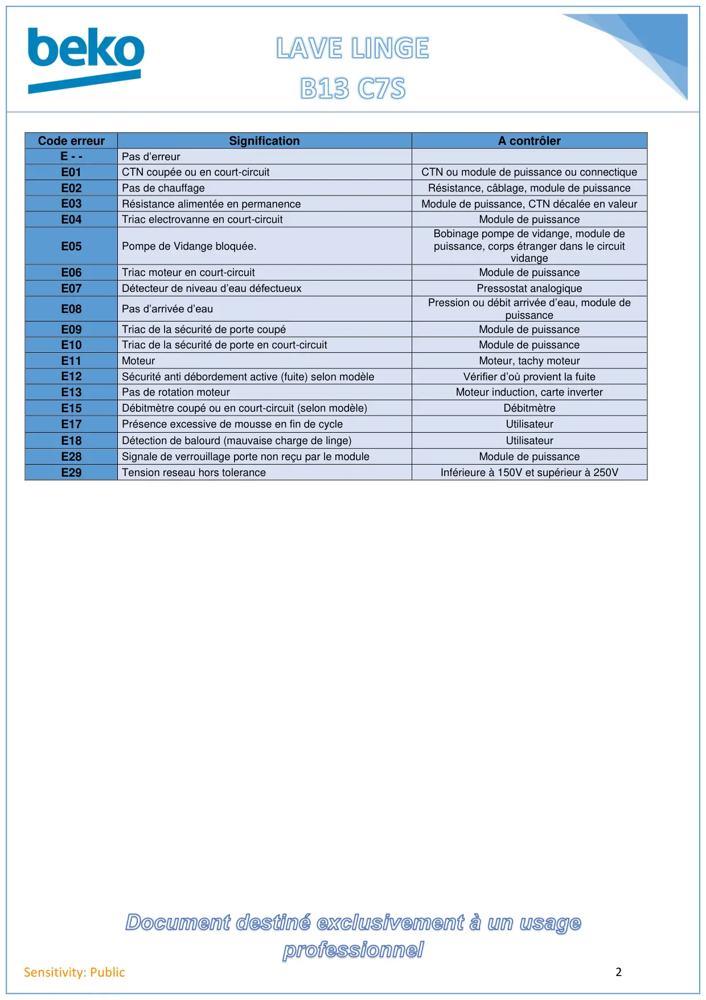

Prog Test lave linge B13-C7S

1Sensitivity: PublicAfficheurIntensité0Entrée dans le programme test.- - -1Affiche le dernier code erreur en mémoire.E - -2Version de l’électronique.Exemple C353Tout l’afficheur clignote.4Rotation moteur sens anti-horaire 52 tr/min55Rotation sens horaire :Si la CTN * est coupée ou en court-circuit, la rotation du tambour sera de100tr/mn.Si la tension secteur est inférieure à 185V ou supérieure à 265V, larotation du tambour sera de 140 tr/mn.S’il n’y a aucun défaut sur la CTN ou sur la tension secteur, la vitesse dutambour sera à la vitesse maximale d’essorage de l’appareil.6Alimentation électrovanne prélavage.77Alimentation électrovanne lavage.88Alimentation des 2 électrovannes simultanément (compartimentadoucissant).99Alimentation de la résistance, si niveau d’eau correct sinon l’appareil va faireun complément d’eau pour pouvoir alimenter la résistance.10Entre 8 et 9 A10Vidange.1111Affiche code erreur si détecté pendant le programme test.12Activation du programme test :Sélecteur sur la position Marche Arrêt, rester appuyé sur la touche Essorage, tourner le sélecteur de programme sur laposition Coton (1er cran à droite). 3 digits - - - vont s’afficher sur l’écran et l’appareil va se verrouiller : l’appareil est dans leprogramme test.Appuyer sur la touche Départ/Pause afin de contrôler si un code erreur en mémoire : si pas d’erreur en mémoire, l’afficheurindiquera « E - - ».La touche Départ/Pause sert à passer les étapes (voir tableau des étapes ci-dessous).Etapes*Valeur de la CTN : 5,6 kOhms à 25 °C
1 / 2
2Sensitivity: PublicCode erreurSignificationA contrôlerE - -Pas d’erreurE01CTN coupée ou en court-circuitCTN ou module de puissance ou connectiqueE02Pas de chauffageRésistance, câblage, module de puissanceE03Résistance alimentée en permanenceModule de puissance, CTN décalée en valeurE04Triac electrovanne en court-circuitModule de puissanceE05Pompe de Vidange bloquée.Bobinage pompe de vidange, module depuissance, corps étranger dans le circuitvidangeE06Triac moteur en court-circuitModule de puissanceE07Détecteur de niveau d’eau défectueuxPressostat analogiqueE08Pas d’arrivée d’eauPression ou débit arrivée d’eau, module depuissanceE09Triac de la sécurité de porte coupéModule de puissanceE10Triac de la sécurité de porte en court-circuitModule de puissanceE11MoteurMoteur, tachy moteurE12Sécurité anti débordement active (fuite) selon modèleVérifier d’où provient la fuiteE13Pas de rotation moteurMoteur induction, carte inverterE15Débitmètre coupé ou en court-circuit (selon modèle)DébitmètreE17Présence excessive de mousse en fin de cycleUtilisateurE18Détection de balourd (mauvaise charge de linge)UtilisateurE28Signale de verrouillage porte non reçu par le moduleModule de puissanceE29Tension reseau hors toleranceInférieure à 150V et supérieur à 250V
2 / 2